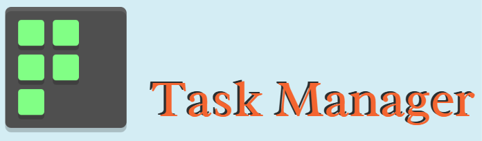

<main>
  <a [routerLink]="['/']">
    <header class="brand-name">
      
    </header>
  </a>
  <div class="main-content">
    <div class="sidebar" *ngIf="isSignedIn | async">
      <a [routerLink]="['/profile']" class="nav-btn">
        My Profile
      </a>
      <a [routerLink]="['/tasks']" class="nav-btn">
        My Tasks
      </a>
      <a [routerLink]="['/new-task']" class="nav-btn">
        Add New Task
      </a>
    </div>
    <section class="content">
      <router-outlet></router-outlet>
    </section>
  </div>
</main>

